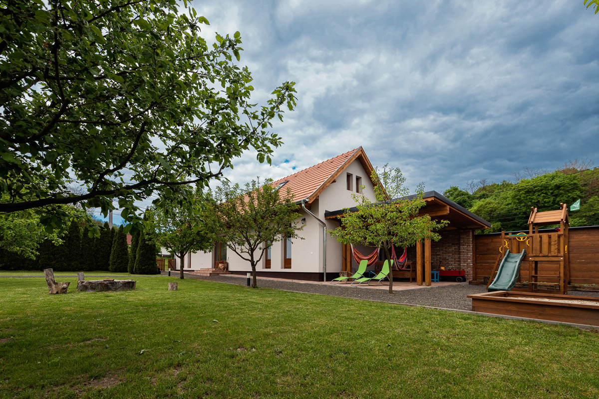
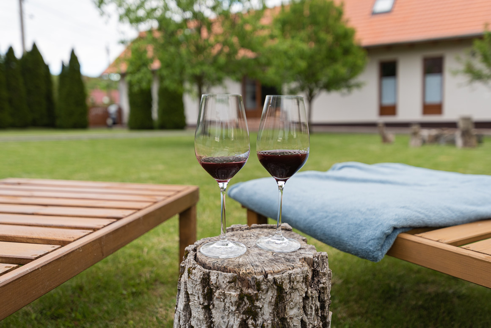
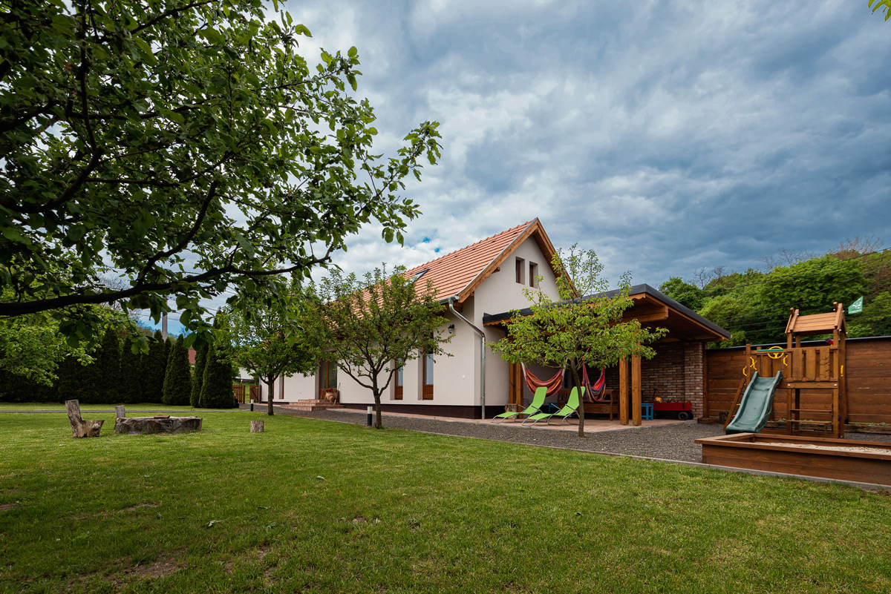
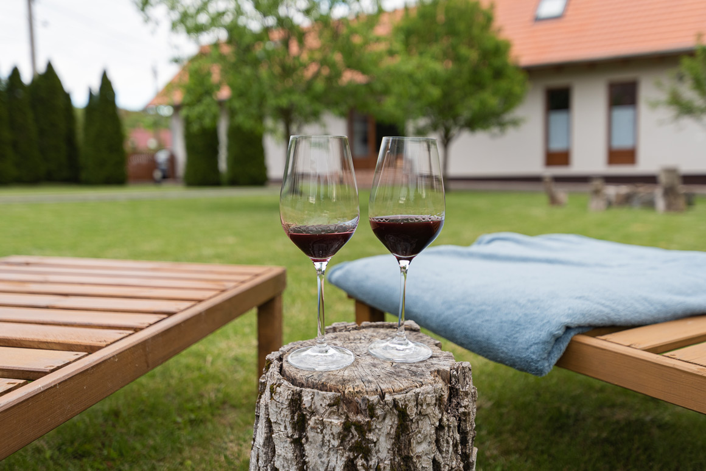
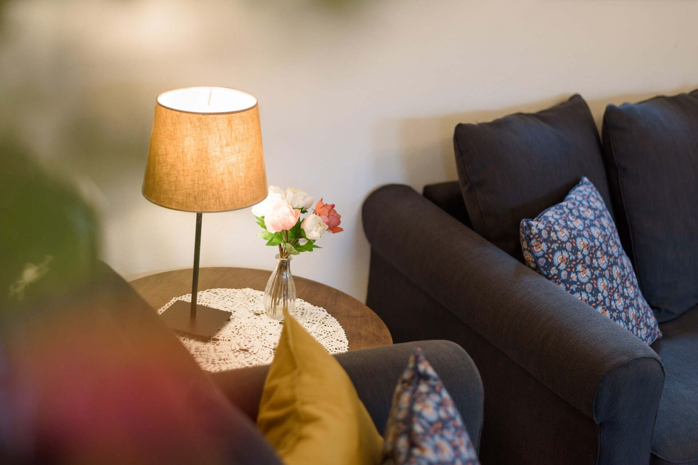
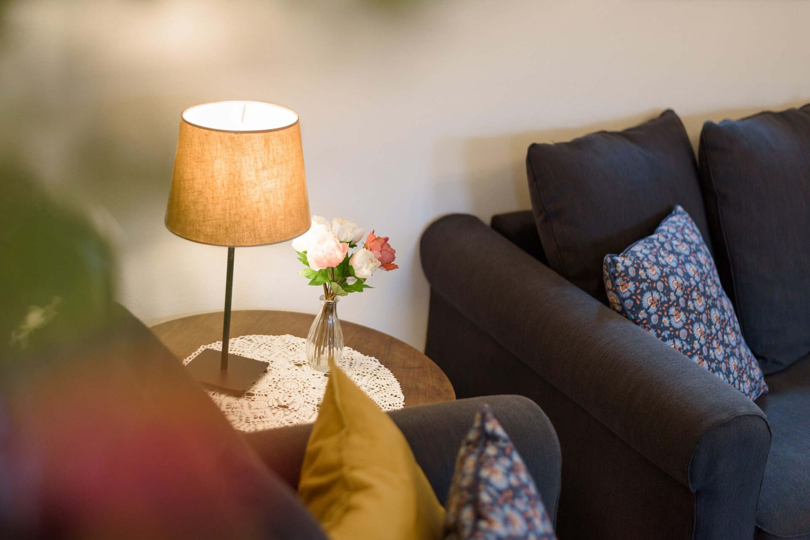

Elizabeth Cottage Vendégházak
ÉRTÉK  TÚRA
TÚRA
BENCZÚRFALVA
Álomszép túrák, kulturális programok, maximális kényelemben Palócföldön
Ha Te is szereted az ég kékjét, a reggel csendjét, az orgona illatát, ha szeretsz mezítláb tótágast állni a fűben, gyermekeid kezét fogva nagyokat sétálni az erdőben vagy egy jó bort kortyolva nagyokat beszélgetni…akkor megérkeztél.
Szeretettel várunk!
Ide invitálunk Benneteket
Benczúrfalva egy pici falu, eldugva a nógrádi dombság lankái között, ahonnan a technika vívmányai, úgymint térerő éppúgy hiányoznak, mint a szmog, zaj és a nagyvárosi tömeg. Azonban a szép erdős környezet, a felfedezésre váró túraútvonalak, a csend, a tiszta levegő és a barátságos emberek kárpótolnak benneteket.
Benczúrfalva tökéletes helyszín a felhőtlen kikapcsolódáshoz, a nagy sétákhoz, kalandtúrákhoz vagy az estébe nyúló beszélgetésekhez.
Vendégházaink
Guszti Ház
Guszti Vendégházunk teljesen új alapokra épült tégla falazattal. Ugyanakkor a frissen épült ház részleteiben, bútoraiban visszaköszönnek a Palócföld jellegzetes motívumai, színei. A Vendégház szobái a földszinten és az emeleten találhatóak, melyek mindegyike tágas, kényelmes, légkondicionált szoba.
SZOBATÍPUSOK:
Földszint: 2 db Franciaágyas szobák saját fürdőszobával
Emelet: 1 db Franciaágyas szoba fürdőszoba nélkül.
1 db Családi szoba saját fürdőszobával. Ebben a nagy légterű szobában egy franciaágy és 2 db szimpla ágy található.
A szobákhoz közös étkező és igényesen kialakított, jól felszerelt konyha tartozik.
KIKNEK AJÁNLJUK?
Elsősorban nagycsaládoknak, baráti társaságoknak. Foglalására minimum 2 szoba és 2 éjszaka foglalása esetén van lehetőség.
Vendégházaink
Örzsi Ház
Örzsi Vendégházunk elosztása a történelmi háromosztású paraszti házak kialakítását tükrözte: tiszta szoba, konyha, kamra, előtte gang deszkával ellátott folyosóval.
A maximális kényelem érdekében azonban jócskán alakítottunk rajta, így a ház belső terét jelentősen megnöveltük. Az eredeti konyha és kamra helyén tágas nappalit és jól felszerelt étkező-konyhát alakítottunk ki.
SZOBATÍPUSOK:
1 db Családi szoba saját fürdőszobával.
Ebben a nagy légterű szobában egy franciaágy és egy kinyitható kanapéágy található. Ebből a szobatípusból 1 db található a házban.
KIKNEK AJÁNLJUK?
Elsősorban pároknak, kisgyermekes családoknak. Foglalására minimum 2 éjszaka foglalása esetén van lehetőség.
Áraink
Az Örzsi Házat és a Guszti Házat egyszerre és külön-külön is foglalhatjátok. Egyidejű foglalás esetén a két Házban 10 felnőtt és 4 gyermek részére tudunk szállást biztosítani. A szobák nem pótágyazhatóak és a bennük lévő franciaágyak nem széthúzhatóak. Mindkét Ház esetében minimum 2 éjszaka foglalható.
Örzsi Ház
44 000 Ft/Ház/éj
Guszti Ház
14 000 Ft/fő/éj
Galéria

 



 

Felszereltség

Természetközeli szállás

Jól felszerelt konyha evőeszközökkel, sütés-főzés kellékeivel

Minőségi matracok, kényelmes, nagy franciaágyak

Ágynemű antiallergén anyagokból, törölközők

Organikus, gyógynövény alapú fürdőszobai kozmetikumok,

Wi-fi, Streaming csatorna (Netflix)

Kapszulás kávégép, kávékapszulákkal (Nespresso)

Babáknak etetőszék, fürdetőkád

Gyerekeknek kerti játszó, homokozó, mesekönyvek, társasjátékok

Kerti napozóágyak, hintaágyak
Túráink
Vendégházaink az Északi Zöld és a Mária Út túra útvonalán találhatóak. A Házból kilépve könnyed túrákat tehettek a dimbes-dombos vidéken és gyönyörködhettek az elétek táruló panorámában. A hosszabb bakancsos túrák és kerékpározás szerelmesei a környék legszebb magaslatait és kirándulóhelyeit is felfedezhetik.
A kerékpározás szerelmesei e-bike és túrakerékpárral érinthetik a környék legszebb magaslatait.
Palóc Grand Canyon
Egy varázslatosi szurdokvölgy meredek, néhol különlegesen ívelt, a sárga és barna kőzetek változatos játékával.
A 15-20 méter mélyen és nagyjából 400 méter hosszan bevágódott, rendkívül látványos kis szoros csodás látnivaló.

66 km


Látnivalók
Isten tenyere kilátó
A Hollókő és Felsőtold határán található Kéz Kilátó nagyszerű kirándulóhely.
Könnyen járható túra útvonalon lehet megközelíteni, festői szépségű panorámát nyújt, ameddig a szem ellát.
Értékeink
Benczúr - kúria
Benczúrfalva a művészetek kedvelőinek is ideális választás.
A teljeskörűen felújított Benczúr-kúriában találjátok híres festőművészünk, Benczúr Gyula alkotásait
A Benczúr-kúria állandó kiállítással vár Benneteket A gyönyörűen felújított termekben megismerhetitek a festőművész eredeti festményeit, relikviáit, életútját, családjának kötődését Benczúrfalvához.
Csodaszép környezetben vár mindenkit a kastély hangulatos kialakított kávézója, és a kastélyt körülvevő idilli parkban el és pihenő terasz biztosít lehetőséget egy kis szusszanásra, az ajándékboltban pedig szuvenírt is beszerezhettek.
Gyakran Ismételt Kérdések
Hány éjszakára lehet foglalni?
Válasz.
Mikor tudjuk átvenni és meddig kell elhagynunk a szálláshelyet?
Vendégházainkat a foglalás első napján délután 16:00 órától lehet elfoglalni, valamint az utolsó tartózkodási nap délelőtt 11:00 óráig kell elhagyni.
Hogyan tudunk fizetni?
Válasz.
Mennyibe kerül egy éjszaka és mit foglal magába az ár?
Válasz.
Milyen felszereltsége van a házaknak?
Válasz.
Vannak szomszédok?
Válasz.
Reggelit tudunk kérni?
Válasz.
Háziállatot vihetünk?
Válasz.